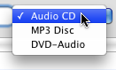
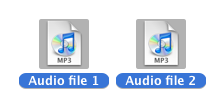
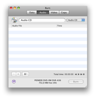
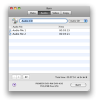
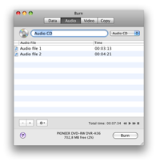
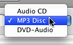
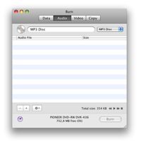
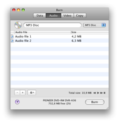
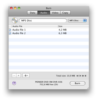
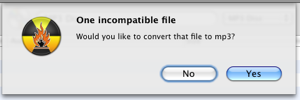

Burning Audio Discs:
Burn can create the most common Audio-CD, but also a MP3
disc. Most newer devices can play MP3 discs. Audio-CDs can only be
burned on CDs. MP3 discs can be burned on any disc. Burn
can also burn a less common format, DVD-Audio discs. Some home DVD
Players are able to play these discs. These discs can contain audio in
extra high quality. Direct supported file formats for these discs are
wav and flac files.
Burning Audio-CDs:
1 Select Audio-CD
Select Audio-CD in the popup.

2 Select some audio files
Select some QuickTime compatible files (can be video
files too, only the audio is used)
Note: protected audio files aren't supported.

3 Drop them in the list:
Drop the selected files in the list, Burn will check if
they can be used.
 

4 Click on Burn
This will bring up a dialog.

5 Choose options
Choose options for the burning session. For more settings, see the
Preferences under the Burn menu.

6 Burn the disc
Now click Burn to burn the disc.

7 Burn
will burn the disc
While burning Burn will show a dialog with the status of the
burn.

Burning MP3 and DVD-Audio discs:
1 Select MP3 Disc or DVD-Audio
Select MP3 Disc or DVD-Audio in the popup.

2 Select some audio files
Select some audio and video files. Most formats are
supported.
Note: protected audio files aren't supported.
3 Drop them in the list:
Drop the selected files in the list. If the files are
already the right format they will be added. If not Burn will ask to
convert
them.
 


4 Click on Burn
This will bring up a dialog.
5 Choose options
Choose options for the burning session. For more settings, see the
Preferences under the Burn menu.
6 Burn the disc
Now click Burn to burn the disc.
7 Burn
will burn the disc
While burning Burn will show a dialog with the status of the
burn.